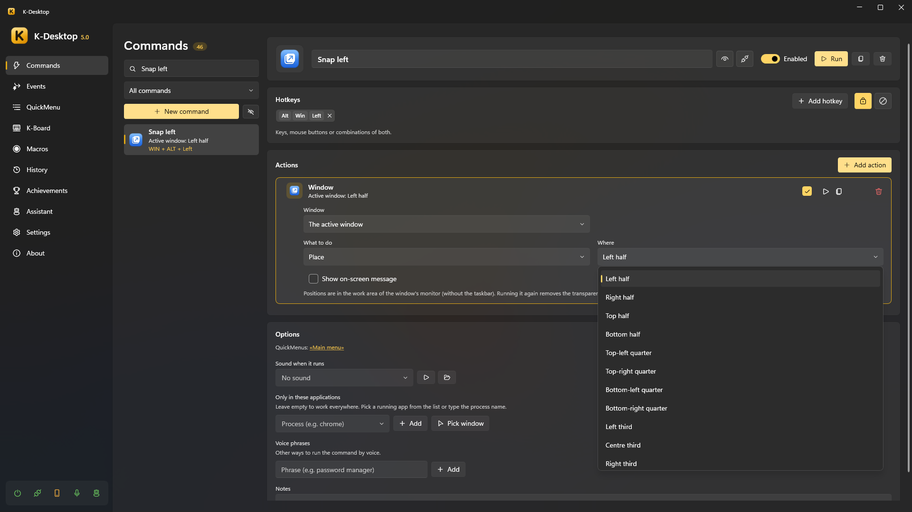
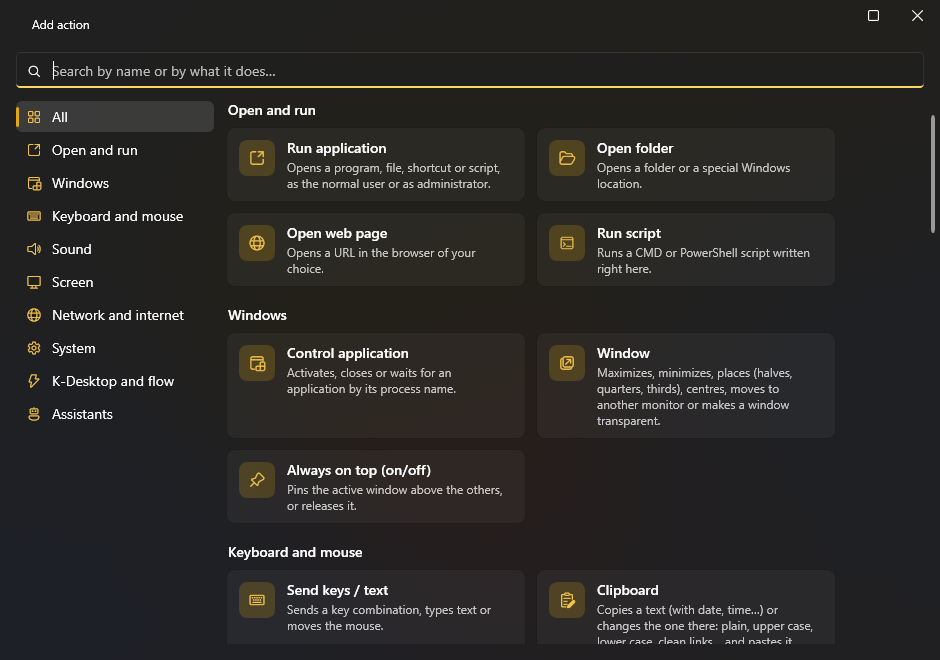
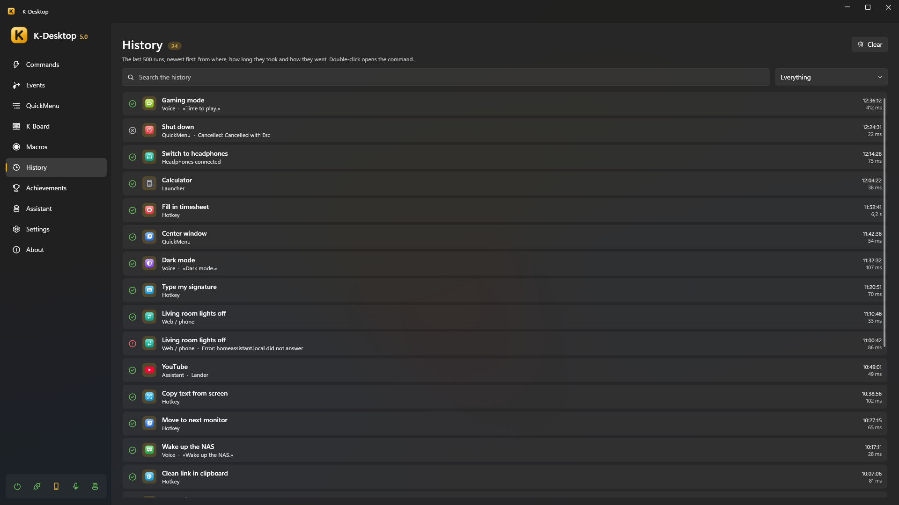

Commands
A command is a list of actions with a name. It can be run by a hotkey, from a QuickMenu, the launcher, your voice, your phone, the network, an event, another command or an assistant.

Hotkeys
A hotkey is any combination of keys, mouse buttons and the wheel: CTRL + ALT + O, F13, Mouse 5,
Mouse 4 + Mouse 1, CTRL + Wheel Up… To record one, click the hotkey box and press it. A command can have several.
- For one program only: limit the command to some programs (by their process name). When the same hotkey exists globally and for one program, the specific one wins inside that program and the global one everywhere else.
- Disable in: in Settings → Disable in you list programs (games, remote desktops…) where K-Desktop's hotkeys do nothing. The action Disable in current app toggles it for the program in front.
- K-Desktop warns you when a hotkey is already used by another command, by K-Desktop itself or by an assistant.
Hot corners and mouse gestures
Next to Add hotkey there are two more buttons:
- Screen corner: choose one of the four (↖ ↗ ↙ ↘) and the command runs when you rest the mouse there for a moment. Any corner where the cursor stops counts, also the one left loose by a taller or shifted screen; where two screens meet there is no corner. It never fires with a button held or in full screen.
- Mouse gesture: a drawing of one stroke (←, →, ↑, ↓, C, L, N, S, U, V, Λ, W, M, Z or a circle) made holding the right button (or the middle one, Mouse 4 or Mouse 5). If you click without moving, or hold it still, the button works as always; Esc while drawing cancels it. The gesture window has a box to try the drawings with the left button, and Draw your own: give it a name and draw it three times.
The wait in the corner, the gesture button, showing the stroke and the programs without gestures are in Settings → Mouse.
Actions
Each command has a list of actions that run in order: open a program, place a window, send keys, change the volume, wait, run another command… See the complete list of actions.

- Each action can be switched off without deleting it, and its order changed by dragging.
- Run in the editor tries the command at once.
- A command that takes a while (a wait, a macro, a script it waits for…) shows a ▶ in the list while it is running, and next to the number of commands you see how many are running: click it to see them or stop them all. Run turns into Stop while that command is still running.
- Two commands cannot have the same name (nor two events, QuickMenus, macros or K-Board profiles): if you type one that already exists, the previous name stays.
- An action that opens something chooses whether it runs as administrator or as a normal user.
If… (conditions)
The If… action checks something and, if it is not so, stops the command, skips the next actions or runs another command instead (chosen from the list; it gets the same variables). It can check:
| Condition | Example |
|---|---|
| A program is open / is in front | «If Steam is open» |
| A time and days | «If it's Monday to Friday from 9:00 to 18:00» |
| A device is connected | «If the Xbox controller is connected» |
| The sound plays through a device / something is playing | «If sound plays through the headphones» |
| A network | «If connected to HomeWiFi», «If there's no network» |
| Battery or mains | «If running on battery» |
| A host answers | «If 192.168.1.10 answers» |
| A file exists | «If D:\backup.lock exists» |
| The clipboard | «If the clipboard contains "http"» |
| CPU, GPU or memory use | «If the processor is above 80 %» |
| Battery below a % | «If the battery is below 20 %» |
| Screens plugged in | «If there are 2 screens or more» |
| It is daytime | «If it is daytime», «If it is night» (between sunrise and sunset where you are) |
| A text or variable: has something, contains, is equal to, is greater or less than | «If {result} contains "error"», «If {result} is greater than 80» |
Every condition can be turned around with The opposite («isn't», «doesn't»…). When comparing, numbers are compared as numbers («7» is less than «10»; «2,5» and «2.5» are the same) and text without minding upper or lower case.
History
History lists everything that ran: which command, when, from where (hotkey, menu, launcher, voice, phone, network, event, assistant, MCP server, command line…) and whether it went well.

Organising
- Search by name, hotkey or action, and filter the list: all commands, those in no QuickMenu, or those of one QuickMenu.
- Enable or disable a command, hide it from the list (it still works), duplicate it or delete it (it also leaves the QuickMenus it was in).
- Available for remote control: whether the phone and the network can see and run it.
- Icon: automatic (from its first action), a built-in vector icon in any colour, a Windows icon library, any image or a website's favicon.
- In the editor, Test only this action runs one action alone.
Export and import
A command, a macro, a K-Board profile, an event, a QuickMenu, a layout or a text can be taken on its own to another PC (or
kept apart) with
Export…, from the list's right-click menu. It saves a .kdx file
with everything it needs: the commands an event runs, the macros, QuickMenus, K-Board profiles, layouts and events a
command uses, the commands of a menu or of a profile… and your own icons, sounds and gestures.
To bring it in: Import… in the right-click menu of any of those lists (also in the empty space under the rows), or
drop the .kdx on the K-Desktop window. It never overwrites anything:
- What you already have, the same, is used as it is.
- If you already have something but with changes, it asks: Add as a copy (it comes in apart, and so does what uses it, so it works as it was exported) or Use mine.
- A name that already exists gets a number («Greeting 2») and a hotkey you already use is left out.
When it is done it opens what came in. From outside: KDesktop.exe --import "file.kdx".